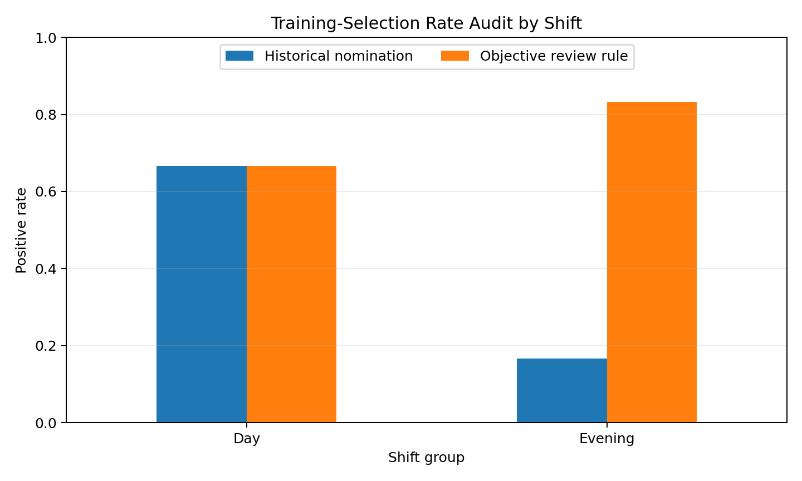

Workshop context
Workshop Four examined data challenges in machine learning, processing and cleaning, data sharing, privacy, security, human bias, communication, and responsible change leadership.
A reproducible Python audit that identifies common data-quality failures, standardizes records, compares group-level outcomes, and keeps final decisions under documented human review.
Workshop Four examined data challenges in machine learning, processing and cleaning, data sharing, privacy, security, human bias, communication, and responsible change leadership.
The audit is intended for instructors, technical reviewers, and leaders who need a simple example of how poor data and historical human decisions can affect AI-supported outcomes.
The synthetic training-selection records include a duplicate, a missing score, an impossible attendance value, and inconsistent shift labels. Historical manager nominations also show a large difference between groups.
The artifact demonstrates that leaders should not accept clean-looking model outputs without examining the underlying records, decision history, access controls, and impact on different groups.
The dataset is synthetic and the rule is only an educational comparison. It must not be used as an automated employment decision. Real decisions require validated job-related criteria, legal and policy review, representative data, documented appeals, and qualified human judgment.
The script profiles the raw records, removes the duplicate candidate, standardizes shift labels, replaces invalid attendance with a group median, imputes the missing assessment score, and calculates group-level positive rates for both historical nominations and a published objective review threshold.

| Measure | Day shift | Evening shift | Absolute gap |
|---|---|---|---|
| Historical manager nomination | 66.7% | 16.7% | 50.0 percentage points |
| Objective review rule | 66.7% | 83.3% | 16.7 percentage points |
The smaller gap after applying documented criteria is a signal that historical nomination patterns deserve review. It is not proof that the new rule is fair, because sample size, job relevance, measurement quality, and other group impacts still need validation.
cleaned = raw.drop_duplicates(subset=["candidate_id"]).copy()
cleaned["shift"] = cleaned["shift"].str.strip().str.title()
cleaned.loc[
~cleaned["attendance_pct"].between(0, 100),
"attendance_pct"
] = np.nan
cleaned["assessment_score"] = cleaned.groupby("shift")[
"assessment_score"
].transform(lambda values: values.fillna(values.median()))
cleaned["objective_eligible"] = (
(cleaned["assessment_score"] >= 75)
& (cleaned["attendance_pct"] >= 88)
).astype(int)A real workflow should minimize personal data, restrict access by role, encrypt data in storage and transit, log changes, define retention periods, and avoid sharing identifiable records in unapproved tools. Leaders should communicate what data is used, how decisions are reviewed, how errors can be corrected, and where employees can raise concerns without retaliation.
This artifact showed me that data cleaning is not only a technical step. Each choice about duplicates, missing values, outliers, and category labels can change the result that a model produces. I also saw how historical human decisions can enter a dataset and appear objective later. In this example, the manager-nomination rates were very different across shifts, so a leader should pause, investigate the process, and communicate openly instead of assuming that the historical label is automatically correct.
The Python audit strengthened my ability to connect code with responsible leadership. I created repeatable cleaning rules and calculated group-level rates, but I also documented that a smaller gap does not prove fairness. Real decisions would require better data, job-related validation, privacy and security controls, stakeholder input, an appeal process, and continued monitoring. My next step is to test multiple thresholds and error rates so the review considers both who is selected and who may be incorrectly excluded.